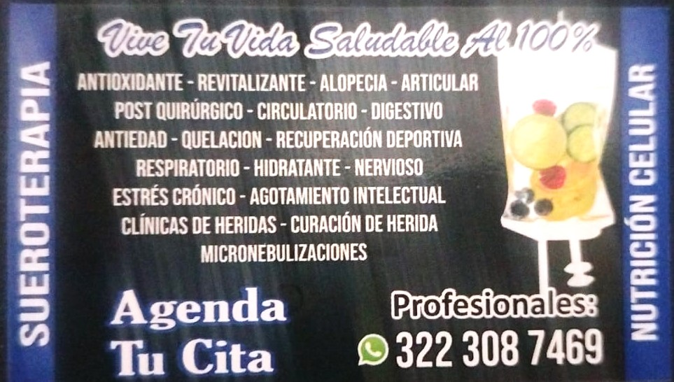

..MEGA DOSIS DE VITAMINA C
..INMUNOMODULADOR
..TERAPIA CELULAR
..CANSANCIO CRONICO
..INFECCIONES FRECUENTES
..ANEMIA CRONICA
..ARTRITIS
..FATIGA
..TRIGLISERIDOS
..DEBILIDAD MUSCULAR
..COLAGENO
..NEBULIZACIONES
..CLINICA DE HERIDAS
 Escríbeme
Escríbeme
MEDICAMENTO 100% NATURAL
LABORATORIO: awa organics
.¡ vitamina !
son compuestos orgánicos esenciales que el cuerpo
necesita para su correcto funcionamiento,como son:
procesos metabólicos, el crecimiento, la reparación de tejidos, el correcto funcionamiento del sistema inmunitario, desarrollarse, Son vitales para la salud
ya que participan en numerosos procesos metabólicos y ayudan a prevenir enfermedades
¡ desintoxicacion !
Se buscan ayudar al cuerpo a eliminar toxinas, radicales libres, metales pesados, controlar el exceso de peso. promover el desarrollo celular a través de la adopción de medicamentos naturales, la suero terapia ayuda a tu cuerpo a reactivar sustancias del organismos , mediante la modulacion ante las actividades diarias, buscamos limitar que el desgaste sea mayor a la producion de algunos elementos en el cuerpo mediante mecanismos naturales, nuestro principio activo elimina mediante la traspiracion y el sistema urinario las toxinas acumulada por el uso de sustancias, medicamentos, dietas inadecuadas, uso excesivo de medicamento de control especial.
¡ activacion y apollo celular !
recuperar o mantener una funcion celular normal, fisiologica, maduracion celular.
¡que es la suero terapia !
consistente en la administración de sueros específicos que favorecen la autocuración de nuestro organos en el cuerpo a partir de una selección de vitaminas, oligoelementos, fármacos biológicos naturales
¡ Beneficio !
1..Estimula tu cerebro para sentir vitalidad. 2..Fortalecer tu sistema inmune para crear una barrera protectora hacia los virus y enfermedades 3..Mejorar y prevenir síntomas de resfriado o malestar general 4..Preparar tú sistema inmunológico para tus viajes 5..Obten mayor rendimiento en tus rutinas de ejercicio y acelerar tu recuperación 6..Despertar tu energía cuando te sientes con fatiga, estrés, irritación y cansancio 7..Mejorar la calidad de tu sueño 8..Re-establecer la apariencia de tu piel y prevenir el envejecimiento 9..Eliminar la carga tóxica que adquiere tu cuerpo ya sea por consumo de alcohol, tabaco, por fármacos o por situaciones de estrés. 10..Para revitalizarte luego de una gran fiesta o prepararte para esta 11..Quemar grasa y tratar la obesidad, triglicéridos, colesterol alto. 12..Mejorar la capacidad y estado de tus órganos 13..Darle calidad a tus años de vida 14..Liberar colágeno y elastina¡ Vitamina bio 12 !
Comprende 7 vitaminas y proteínas esenciales para el cuerpo son:
..Bio12
..Colageno
..Biotina
..Pantenol
..Tiamina
..Ribofabina
..Piridoxina
B12: La vitamina B12, también conocida como cobalamina, es un nutriente esencial para el cuerpo humano. Desempeña un papel clave en la formación de glóbulos rojos, la función nerviosa y la producción de ADN, el material genético de las células. Además, participa en el metabolismo energético y ayuda a mantener la salud del sistema nervioso Colágeno: es la proteína más abundante en el cuerpo humano, y es un componente fundamental de la piel, los huesos, los tendones, los ligamentos y otros tejidos conectivos¡ Cóctel de Myers: !
El cóctel de Myers generalmente incluye: Vitaminas del complejo B (B1, B2, B3, B6, B12), vitamina C. Minerales: Magnesio, calcio, potasio, zinc, y ácido fólico.
¡ Vitamina C homeopática !
Fortalece el sistema inmunológico, ayuda a estimular las defensas naturales del cuerpo contra enfermedades e infeccione. Acción antioxidante: Protege las células del daño causado por los radicales libres, que pueden contribuir a enfermedades crónicas. Promover la cicatrización de heridas: Se considera que la vitamina C es esencial para la formación de colágeno, una proteína clave en la reparación de tejidos y la cicatrización Apoyo en procesos inflamatorios y alérgicos: Algunos profesionales de la salud homeopática la recomiendan para pacientes con inflamación y alergias. Tratamiento de problemas de piel: Se utiliza para mejorar la apariencia de la piel, reducir arrugas y promover un tono de piel uniforme. Apoyo en tratamientos con antibióticos: Se sugiere que puede ayudar a contrarrestar los efectos secundarios de los antibióticos.
tratamientos homeopatico para diferentes diagnostico

valoracion medica domiciliaria
- cotizacion inmdiata
- medicamentos con registro invima
- solo domicilio
Presentación de mi papelería
Contacto
Correo: cesar258577@gmail.com
Teléfono: 3223087469